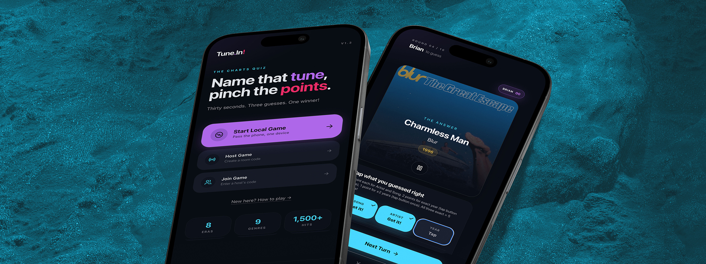
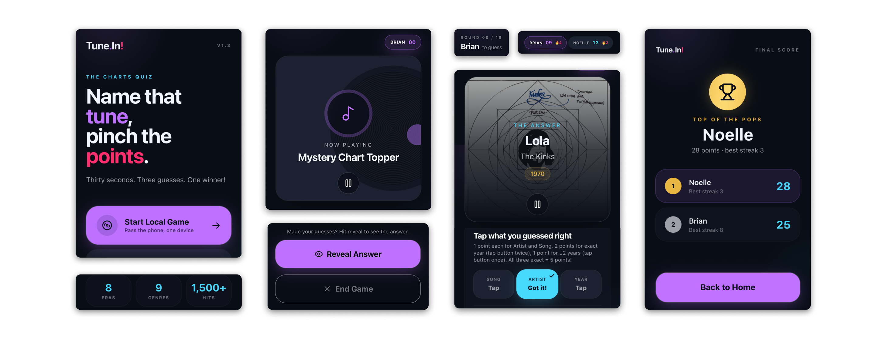
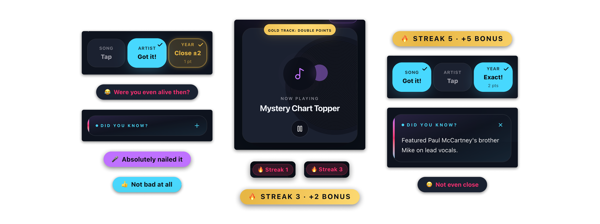
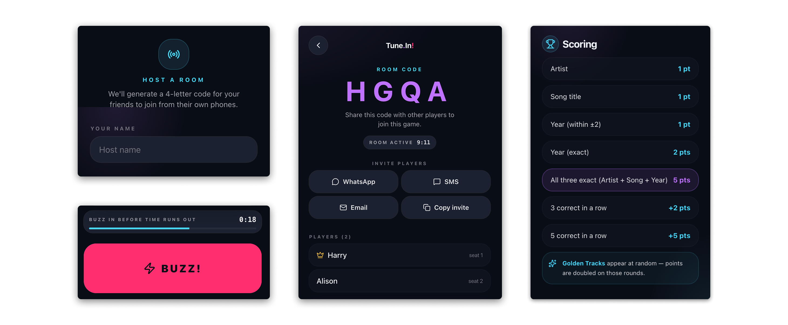
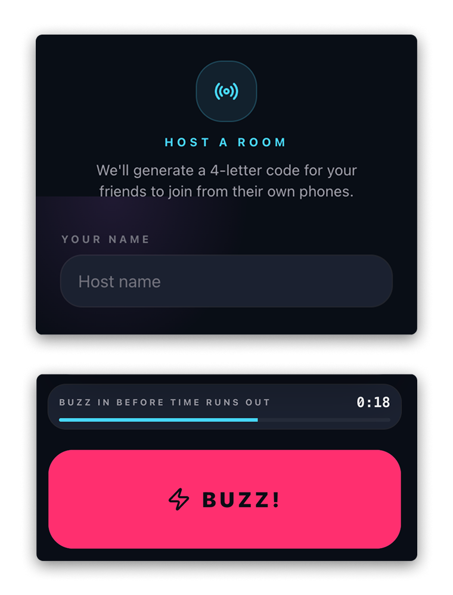
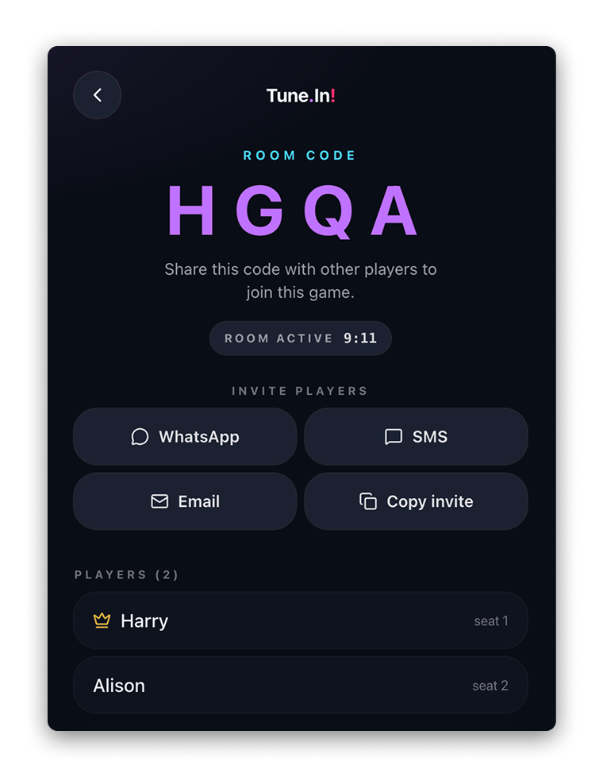
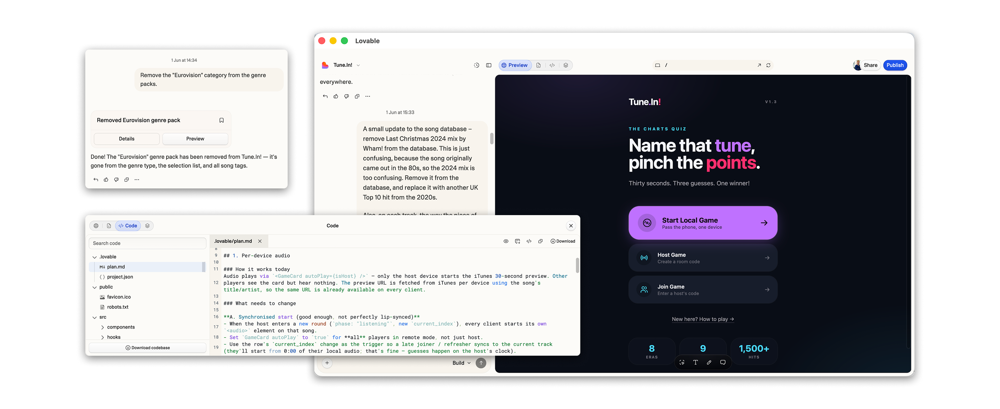
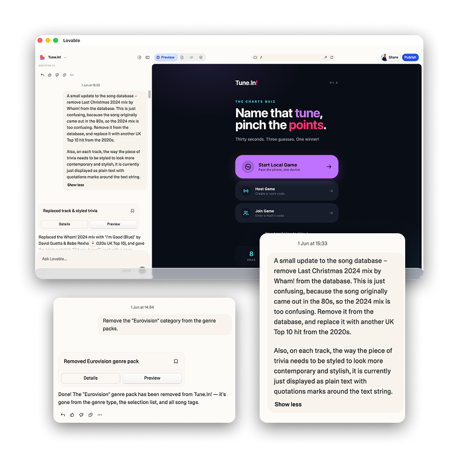
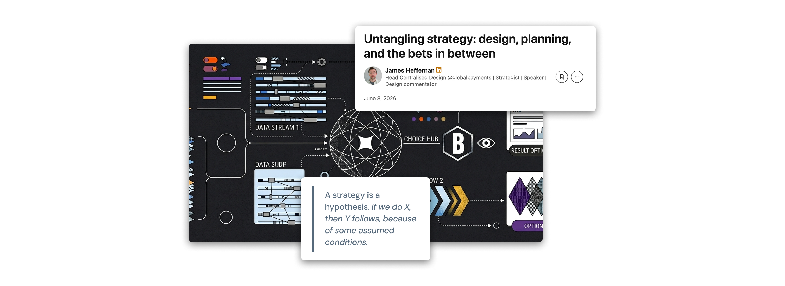
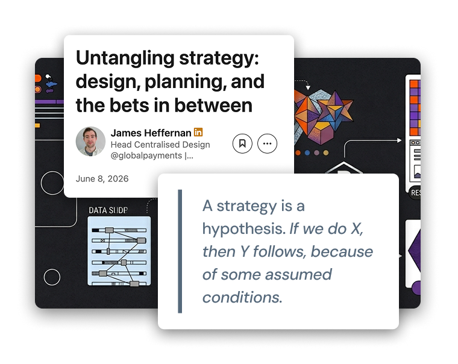

UX DESIGN CASE STUDY
Tune.In!
Overview
In early June 2026, my family and my younger brother’s family were on a camping weekend together at Hidden Valley in gorgeous Co. Wicklow, Ireland. We got great sunshine, had the BBQ on the go, the kids laughed and played all weekend. For us adults, we had this card based music trivia game – scan a QR code, play a song, guess the artist and the song name, turn over the card and see the answer. We had great fun playing this all weekend but once the cards ran out so did the fun. And there and then myself and my brother began discussing how we might recreate the concept digitally.
And so, rather than following my usual UX process, I decided I’d treat the idea as a bit of an experiment. Using Lovable for development, we moved directly from concept to implementation, building up to a functional multiplayer prototype over the space of a few hours.
I will admit the result was very exciting, but at the same time very revealing. The speed of product creation with AI allows ideas to be tested almost instantly, but it also exposes the risks of bypassing discovery, research and strategic thinking. In this article I’ve tried to lay out the lessons I learned from a User Experience perspective when speed became the primary objective.
THE APPROACH
Exploring what happens when discovery is traded for speed
We began with an idea locked in our heads of how we wanted the game to work, which was pretty much a direct translation of the physical card game into digital form. Utilising the Spotify API for songs meant requiring users to authenticate themselves each time, so we instead hooked up to the iTunes preview API. This meant that instead of playing full songs, the game would instead only feature iTunes’ freely available 30-second preview clips.
You could play a round, mark your correct guesses, see your score, and pass the phone to the next player. This first pass was enough to validate the fun of the idea, albeit that validation was entirely self-referential. We were playing our own game with our own assumptions baked in.


ITERATIVE EVOLUTION
When building became the brainstorm
With this first prototype up and running, I began freely implementing new ideas into the game with the intention that these could increase engagement. I introduced streak bonuses, golden rounds (where points are doubled!), music trivia and contextual reactions, hoping to add moments of excitement and emotional feedback, and perhaps make the experience feel more dynamic without changing the core format.



I expanded the idea further again and built out the capability to play the game remotely across multiple devices. What began as a local pass-and-play game evolved into a multiplayer experience, opening up entirely new possibilities for the game but also introducing challenges around synchronisation, fairness and game flow.
Several further iterations quickly followed, including randomised turn order in remote games (not always starting with the host), enhanced answer validation, “fastest finger first” buzz rounds and clearer scoring feedback. While many of these new features certainly deepened the game experience, they were largely driven by intuition and observation rather than user research or validated evidence.



LEARNINGS
Key Takeaways
Rapid Prototyping Created Immediate Momentum
There’s no doubting that the greatest success we achieved was speed. The journey from idea to playable product took hours rather than weeks. Using AI dramatically reduced the effort that would have been required to move from concept to execution and this allowed me to test ideas while my enthusiasm was still high. And it also allowed me to quickly validate several technical assumptions including audio delivery to multiple devices, multiplayer synchronisation and answer-matching logic without any significant development investment required.
Building solutions before understanding problems
As I mentioned earlier, out of my own curiosity and as a small experiment, I skipped many of the activities I would normally advocate for as a UX professional. No user research was conducted. No competitive analysis was performed. No problem statement was defined. Decisions were driven almost entirely by my own personal experience and assumptions. The game was being built around the mechanics of the original card game rather than any clearly understood user need.


Hidden Assumptions
Many core decisions were never validated...
Are 30 second clips more preferable to players than getting to listen to the full song?
Is connecting to a Spotify account really that much of an issue for users who want to play this game?
Is guessing the year of release actually fun for people?
Is competitive scoring the primary motivation?
Are complex bonus systems actually enjoyable?
In the spirit of “moving fast” these choices felt logical because they mirrored the physical game that inspired the concept. However, they remained assumptions rather than evidence-based decisions. Without research, it is impossible to know whether these decisions improve or limit the experience for people who want to play this game.
Speed grows debt and creates future risk
That same speed that accelerated progress also increased uncertainty. As I continued to rapidly add new features and deepen the overall experience, the cost of having to go back and change any of those fundamental assumptions grew. Future research could reveal that players prefer different game modes, or simpler scoring or alternative interaction patterns. Reworking or unpacking all of these features without breaking things and maintaining a coherent experience could require significant effort.
The prototype demonstrated how quickly AI can generate solutions, but also how easily you can accumulate product, development and usability debt whenever discovery is absent from the design process.
CONCLUSION
AI accelerates building, not understanding
This project reinforced an important distinction for me, which is that AI tools can absolutely reduce the time required to create and test solutions by a huge factor. But what they do not replace is the need to understand users, define problems and establish evidence before making product decisions.
Creating this music trivia game was just a low stakes experiment that I indulged myself in for a few hours. The worst-case scenario would have been that I spent a few hours of my own time building a game that nobody beyond me, my wife and kids ever plays. In that sense the cost of being wrong was completely negligible.
But I suppose the real point of this for me, is that in larger organisations the consequences can be much greater. Many teams right now are investing significant time, money and effort building features that solve the wrong problem. AI may reduce the cost of building, but it still does not reduce the cost of building the wrong thing. And building the wrong thing can still bring significant cost – in human hours, in revenue and brand reputation.


An hypothesis that had never been challenged
My colleague James Heffernan recently posted an article on the relationship between strategy, planning and strategic design. This observation of his stood out to me: “strategy is fundamentally a hypothesis – it is a belief that if we do X, then Y will follow because certain conditions are assumed to be true.”
Almost every decision I fed into Lovable to build this prototype was built on assumptions that I never properly interrogated:
I assumed a 30 second clip via iTunes is more preferable to being able to hear the full song via Spotify.
I assumed that guessing the release year is an equal and enjoyable part of the fun (turns out it's actually quite frustrating).
I assumed competitive scoring was the primary source of motivation. (It is for me! 😂)
I assumed the mechanics of the physical card game would naturally translate into a successful digital experience.
The prototype itself became a plan executed against a hypothesis that had never been challenged. That doesn't mean the exercise lacked value. The speed of the development with AI allowed my assumptions to become visible far more quickly than would previously have been possible for me. But visibility is not validation.
If anything, this experience reinforced for me the role of UX, research and strategic design. As the cost of creating solutions continues to fall, the value of identifying the right problem, questioning assumptions and validating strategic bets only increases.
Building has become easier than ever, but understanding is still the hard part and far more important than ever in this new AI enabled world.
Thanks for reading. You can try out the Tune.In! game that I built at this link, let me know you think! https://tunein.brian-design.net/